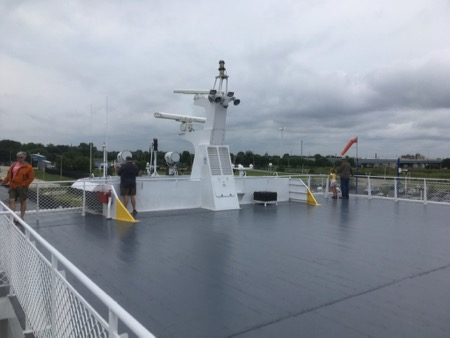
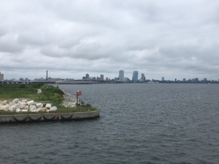
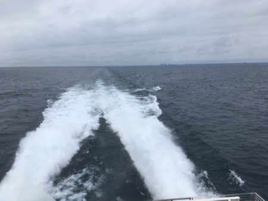
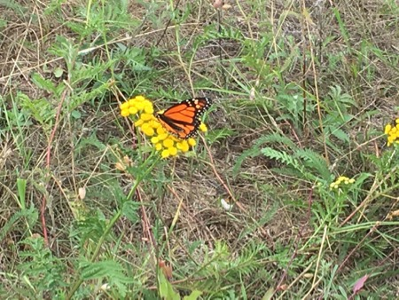

The justify-content Property
The "justify-content: space-around;" declaration displays the flex items with space before, between, and after the lines:








The "justify-content: space-around;" declaration displays the flex items with space before, between, and after the lines: